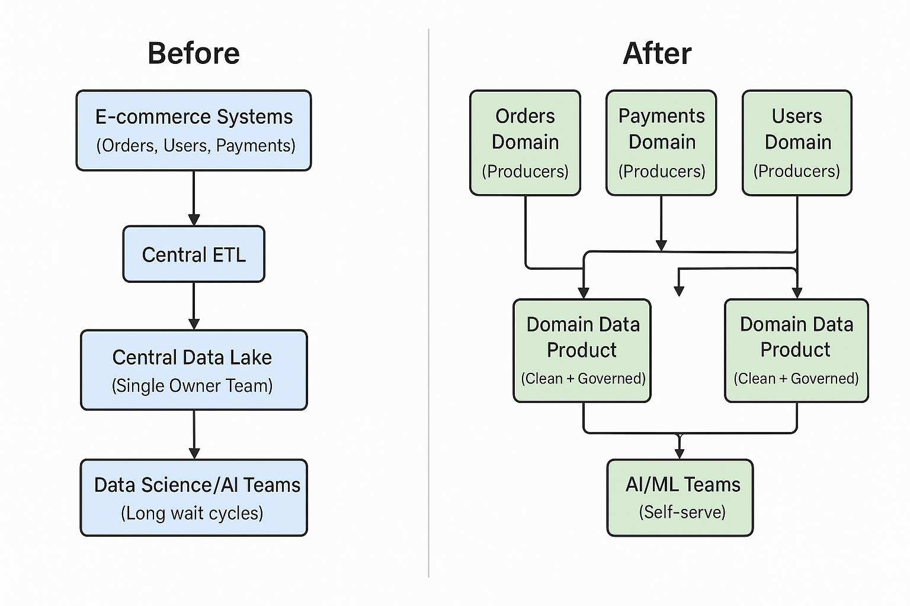

Durga Analytics helps you lay the right data foundation by aligning architecture, domains, semantics, and quality with your business and AI goals.
The e-commerce firm operated on a centralized monolithic data architecture, where all data from different source systems like the website, orders, CRM, inventory, and payments flowed into a central data warehouse through a centralized ETL pipeline. A dedicated data engineering team managed ingestion, transformation, and access control, creating a bottleneck for data availability. Business and data science teams relied heavily on curated datasets, and cross-functional dependencies delayed AI model development. The lack of data ownership at the domain level made experimentation slow and scalability difficult. As a result, developing new AI products or updating existing ones required weeks of coordination, limiting innovation and responsiveness.
With the implementation of a data mesh architecture, the organization shifted to a domain-oriented, decentralized model. Each business unit (like Orders, Inventory, Payments, etc.) became a data product owner, responsible for managing, exposing, and maintaining its own data using scalable platforms such as Snowflake, ADLS, or Delta Lake. These domain teams followed standardized governance and interoperability rules enforced by a unified data catalog and access layer (e.g., Unity Catalog or Azure Purview). This enabled data scientists and AI teams to directly access high-quality, real-time domain-specific data, allowing faster iteration on ML models. The result was a 3x acceleration in AI development, improved collaboration across teams, and significantly enhanced time-to-insight for analytics and product innovation.
